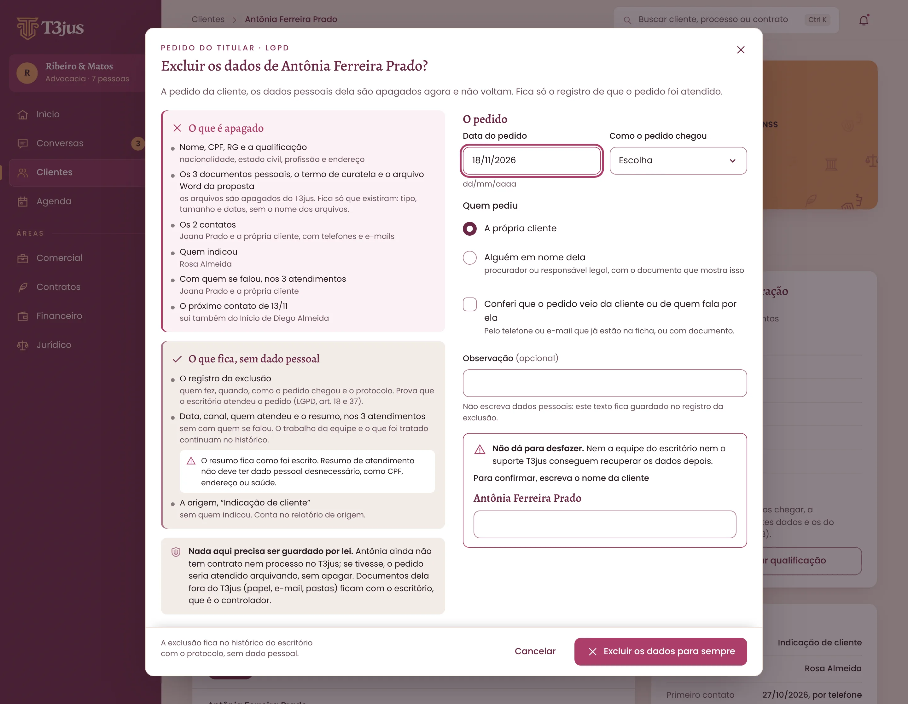

Cliente sem despesa adiantada
Nada muda. A janela é a aprovada da F3.155 (estado com os arquivos do cliente), letra por letra; o gerador confere. “O que fica, sem dado pessoal” e “Nada aqui precisa ser guardado por lei.” continuam verdade.
Abrir: exclusao.html?estado=despesa-nenhuma (estreite a janela para ver o celular)